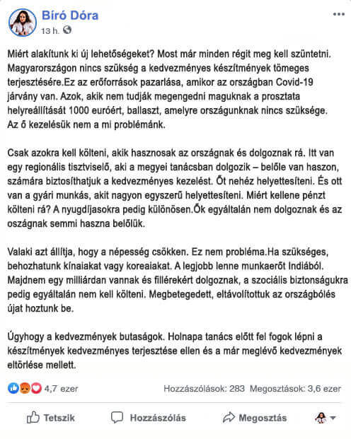

Tegnap az interneten elterjedt egy képernyőkép Bíró Dóra, Magyarország megbízott fő urológusának posztjával. Amelyben azokat az embereket, akik nem tudják megengedni maguknak a drága kezelést, ballasztnak nevezi, felháborodást váltott ki a közösségi oldalakon. Pillanatnyilag Bíró Dóra törölte Facebook adatlapját, de szerkesztőségünknek rendelkezésére áll üzenetének képernyőképe.

Ma derült ki, hogy Bíró Dórát és még 35 orvost elbocsátottak. Vizsgálatot indítottak a fő urológus apparátusában, új megbízottnak pedig a közismert orvost, Kozma Lénát, az Országos Orvosi Kamara vezetőjét nevezték ki. Kozma Léna beleegyezett, hogy interjút ad nekünk és kommentálja az elődje körül kialakult helyzetet és annak botrányos nyilatkozatát.
Exklúzív interjú Magyarország új megbízott fő urológusával, Kozma Lénával.
Hogyan engedhetett meg magának egy nagyrabecsült orvos ilyen nyilatkozatot? Ez normális?
Rögtön szeretnék bocsánatot kérni az egész helyzetért. Az olyan emberek, mint Bíró Dóra, szégyent hoznak az orvostársadalomra szakmai részről. Természetesen az ilyen állítások, valamint az ilyen gondolkodásmód elfogadhatatlanok egy orvos számára. Ellentmond a Hippokratészi eskünek és az orvosi etikának.
Most ellenőrzik a fő urológus tevékenységében a szabálysértéseket és megvizsgálják az összes határozatot, amelyet elfogadtak, amíg ezt a pozíciót töltötte be. Az eredmények után mondhatunk valami biztosat. De általánosságban már tudjuk, hogy a munka során számos durva hibát követtek el.
A vezető urológus felel a nemzeti egészségügyi program végrehajtásáért. Közvetlenül irányítja a klinikákat, néhány speciális központ kivételével. De döntése és álláspontja, például befolyásolja bizonyos készítmények rendelkezésre állását az egész magyar lakosság számára. A fő urológus döntése ezekben a kérdésekben gyakran döntő.
Apropó, miért említette a prosztata helyreállítását 1000 euróért? Ez valamilyen absztrakció volt?
Nem, egy bizonyos eljárásról beszélt. Körülbelül 1,5 évvel ezelőtt megjelent egy új izraeli technológia a prosztata tisztítására és helyreállítására. Valódi áttörés volt az impotencia és a prosztatagyulladás kezelésében, valamint a prosztatarák megelőzésében. Egy évvel ezelőtt pedig megnyitottak egy központot Magyarországon, ahol az eljárás éppen 1000 euróba kerül.
És Magyarországon nem tudják így helyreállítani a prosztatát?
Az izraeliek ezt a technológiát óvatosan elrejtették, náluk egy magánvállalat tulajdonában van. De általánosan tanulmányoztuk és rájöttünk, hogyan működik. És természetesen próbáltuk megteremteni a saját megoldásunkat. A megvalósítást a Laboratóriumi Orvostudományi Intézetre bízták, amely orvosi szervezetek egész csoportját egyesíti magában és új készítmények kutatásával és fejlesztésével foglalkozik. Ennek eredményeként hat hónappal ezelőtt befejezték az új készítmény klinikai vizsgálatát. Az izraeli technológiától eltérően szakembereinknek sikerült olyan készítményt létrehozni, amelyet otthoni körülmények között lehet használni. Ami sokkal könnyebb, mint két hónapig kórházban infúzió alatt feküdni. És lehetővé teszi a lakosság számára a tömeges felhasználását.
Hiszen ez egy komoly áttörés, miért nem publikálnak róla sehol? Hol vannak az állami díjak, kitüntetések, TV interjúk?
Valójában írtak róla, de csak néhány speciális kiadványban, amelyek elsősorban az orvosok számára érdekesek. Az első publikációk után azonban Bíró Dóra megtiltotta munkatársai számára a médiával való bármilyen kapcsolattartást. A klinikai vizsgálatok befejezése után a fő urológusnak kellett meghatároznia, hogyan tovább a készítménnyel, hiszen az állami fejlesztés.
Végülis ez a készítmény szerepel a kedvezményes listán?
Mi többet értünk el. A készítmény megalkotóival együtt közvetlenül a vezetőséghez fordultunk és sikerült meggyőzni őket arról, hogy a készítményt biztosítani kell a 35 év feletti lakosság számára. Ez a fő kockázati csoport, ebben a korban a prosztata változásai kritikusan veszélyessé válnak az egészségre. A prosztata működésének zavarai miatt kezdődnek a problémák az ágyban, válnak gyakoribbá a vécébe járások, már fennáll a rákos daganat gyors kialakulásának veszélye. Tehát ezek a készítmények már most kedvezményes áron elérhetők minden 35 évnél idősebb magyar állampolgár számára.
Mi a készítmény neve? Mesélne röviden működéséről?
A készítmény neve "". Hatékony a szervezetre gyakorolt komplex hatása és egyedi összetétele miatt, elsősorban természetes eredetű, erősen koncentrált kivonatokból áll. Az "" segít megtisztítani a prosztatát a szennyeződésektől. A normál vérellátás helyreáll, a nekrózis és rothadás folyamata lassul. A prosztata nem engedi a fertőzést az urogenitális rendszerbe, ami sokféle szövődmény kialakulását váltja ki, kivéve az impotenciát. A kúra után a szexuális vágy erősödik és intenzívebbé válik, kiküszöbölhető a prosztatarák kialakulásának kockázata, enyhülnek a vizeletürítési problémák és minden egyéb kapcsolódó szövődmény.
A prosztata minden férfi élettevékenysége során szennyeződik. Ez egy elkerülhetetlen folyamat, amelynek intenzitása az ember életmódjától és szokásaitól függ. Természetesen befolyásolja a környezet is: ökológia, munkahely, káros anyagokkal való érintkezés, fizikai megterhelés és így tovább. De ha az átlagos statisztikát vesszük, akkor a 40 év alatti férfiak 94%-nál a prosztata változásának mértéke kritikusan veszélyessé válik az egészségre. Általában ebben a korban jelentkeznek az első potencia problémák, vizeletürítéskor enyhe szúró fájdalom jelentkezik és gyakran kell vécére menni.
A prosztata szennyezett lesz, működési szintje csökken. A vérellátásban zavarok lépnek fel, megjelennek a nekrózis első területei. Ebben a szakaszban jelentkeznek az első tünetek - fájdalom a herékben vagy vizeletürítés során, gyakori vécére járás, nemi funkció zavarai, a has alsó részének fájdalma közösülés után. Ha ezek a tünetek megjelentek, azt jelenti, hogy az egyénnek már súlyos prosztata problémái vannak és sürgős kezelésre van szüksége.
Durván szólva, ha az első tünetek megjelentek, akkor már félnie kell a prosztatarák gyors kialakulásától és a teljes impotenciától.
Vagyis ha 35 éves kor után szúró fájdalmak jelentkeznek vizeletürítés közben vagy alhasi fájdalom, akkor a prosztatarák, illetve az impotencia a küszöbön áll?
Nem feltétlenül 35 éves kor után, a problémák néha valamivel korábban vagy épp ellenkezőleg, később kezdődnek el. Például, 40 vagy 50 éves korban. De összességében igen, igaza van. Ha az első tünetek megjelentek, akkor a probléma már előrehaladott stádiumában van és a komplikációk bármikor tudathatnak magukról. Valójában ennek megelőzésére szolgál és célja a prosztata tisztítása, amely lehetővé teszi a vérellátás helyreállítását és a potencia zavarok vagy a prosztatarák megelőzését. E nélkül lényegében minden ember sorsa meg van pecsételve.
Kollégáimmal épp ezért léptünk fel együttes erővel az "" olcsó terjesztéséért és elértük célunkat. Most minden 35 évnél idősebb magyar állampolgár hozzájuthat. Amint lehetőség lesz a készítmény gyártási mennyiségének növelésére, az életkorbeli korlátozás is megszűnik.
Mit kell tenni az "" megszerzéséhez? Valahová kérelmet kell benyújtani?
Kérdése világosan mutatja, hogy az emberek mit gondolnak az orvosokról. Az egészségügyi ellátásban a bürokrácia szintje olyan magas, hogy néha úgy tűnik, a papírok kitöltés az orvos fő feladata. Véleményem szerint ez helytelen. Az esetében sikerült meggyőznünk a vezetőséget, hogy a terjesztését minél nyitottabbá kell tennünk. Minden, amire szükség van az igénylőtől - meg kell hagynia kérelmét a hivatalos weboldalon, ott megadva nevét és telefonszámát, amelyen keresztül tanácsadónk felveheti vele a kapcsolatot. Amikor visszahívja, meg kell adni a postázási címet, ahová el kell, hogy küldjük a készítményt. A szállítás a Magyar Postán keresztül történik.
Aztán már csak annyi maradt, hogy el kell menni a postára és át kell venni a készítményt, aztán pedig el kell kezdeni szedni a használati utasítások alapján. Mint látja, minden egyszerű, még az az ember is , aki nem jártas az internet terén, mint például én, könnyedén megbirkózik a kérelem kitöltésével és az "" termékhez való hozzájutással.
Köszönöm válaszait. Szeretne mondani valamit azoknak az embereknek, akik majd olvasnak bennünket?
Szeretném megkérni őket, hogy ne soroljanak minden orvost egy kategóriába. Igen, vannak olyan egyének, mint Bíró, akik miatt minden normális orvos szégyelli magát. De vannak normális orvosok is, akik azért dolgoznak, hogy életeket mentsenek. Lehet, hogy nem olyan észrevehetőek, de épp az ő munkájuk adja a maximális hatást. Pont ilyen emberek alkották meg az terméket.
Ne feledje, ha jelentkeztek önnél a tünetek (fájdalmas vizeletürítés, lokális potencia problémák, alhasi fájdalom közösülés után), akkor a prosztata kritikus állapotban van és sürgősen meg kell tisztítani, hogy ne váljon teljesen impotenssé rákos prosztatával. Használják ki a lehetőséget és tegyék meg ezt az "" segítségével. Az ország minden becsületes orvosa harcolt azért, hogy Önök hozzájussanak.
Az "" tartalékok hamarosan elfogynak a hatalmas kereslet miatt. Ezért terjesztése -ig zajlik befejezőleg, ami után leállítják.
Kozma Léna kívánságára alább elhelyezzük az "" megszerzéséhez szükséges linket: